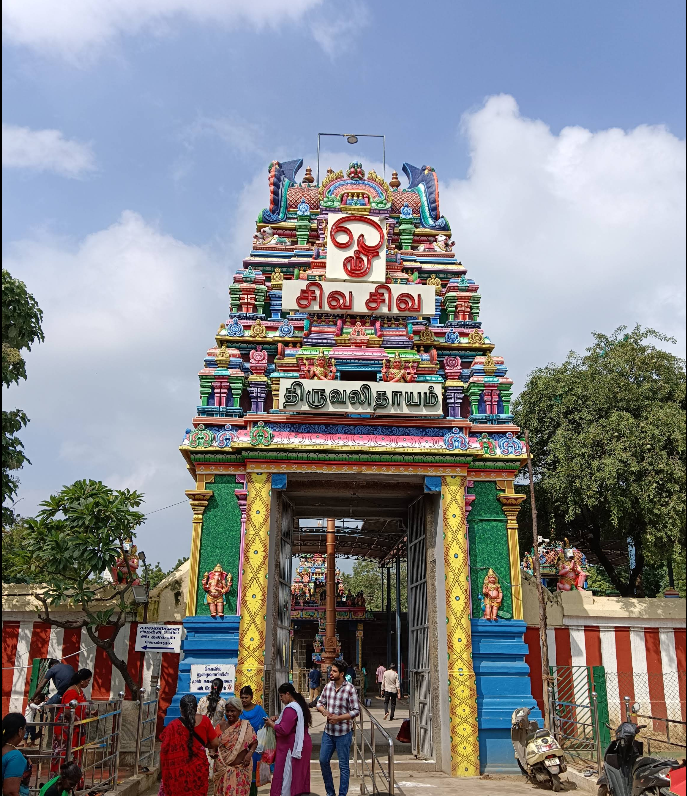

The Thiruvalleeswarar Temple, located in the Padi area of Chennai, is an ancient and revered Hindu temple dedicated to Lord Shiva. This historic shrine is a "Paadal Petra Sthalam," one of the 275 Shiva temples celebrated in the 7th-century Tamil canonical work, the Tevaram, and features a unique Gajaprishta (elephant-back) style vimana (sanctum tower). Legend has it that the presiding deity was worshipped by several figures, including Sage Bharadwaja (in the form of a sparrow), Lord Rama, Hanuman, the Sun, and the Moon Gods. Notably, the temple is a significant Guru Parihara Sthalam (a remedial place of worship for the planet Jupiter), with a special shrine for Guru Bhagavan, where devotees offer yellow clothes and chickpea garlands on Thursdays to mitigate adverse planetary effects and seek blessings for wisdom and marriage. The temple also uniquely features Lord Ganesha with his two consorts, Kamali and Valli, making it a place of prayer for those seeking marriage alliances.
The Thiruvalleeswarar Temple in Padi, Chennai, is an ancient and important Hindu temple dedicated to Lord Shiva. It is one of the 275 Shiva temples mentioned in the Tevaram, a 7th-century Tamil text, and is known for its Gajaprishta (elephant-back) style vimana. Legends say that various figures, including Sage Bharadwaja (as a sparrow), Lord Rama, Hanuman, and the Sun and Moon Gods, worshipped the deity here. The temple is particularly significant as a Guru Parihara Sthalam, a place for seeking remedies related to the planet Jupiter, and features a shrine for Guru Bhagavan where devotees offer yellow items on Thursdays. Another unique aspect is the shrine for Lord Ganesha with his consorts Kamali and Valli, making it a place to pray for marriage blessings. You can find more information about the temple's history and architecture